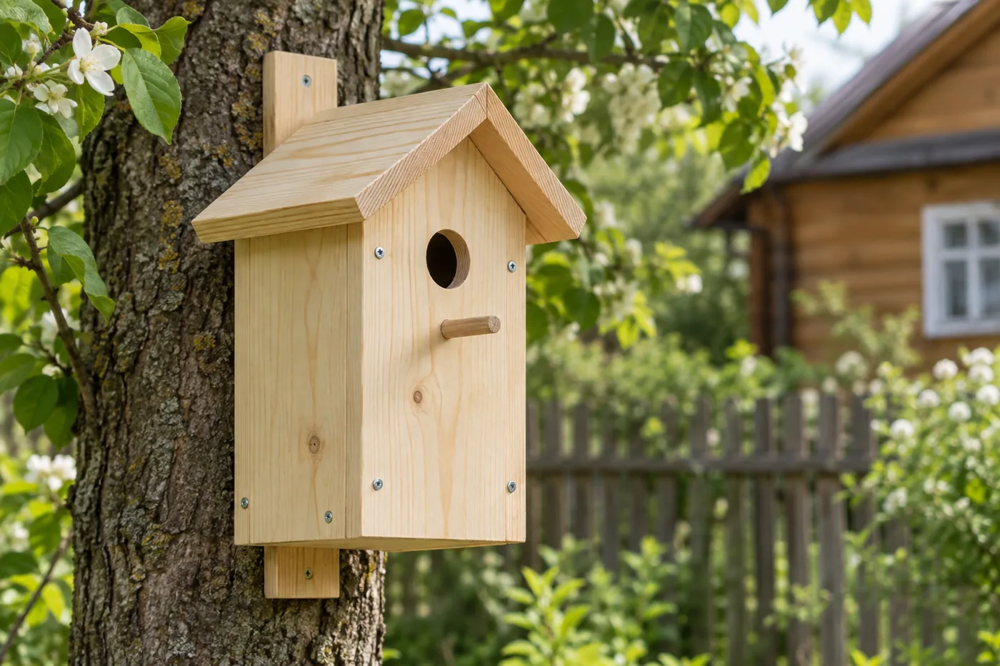
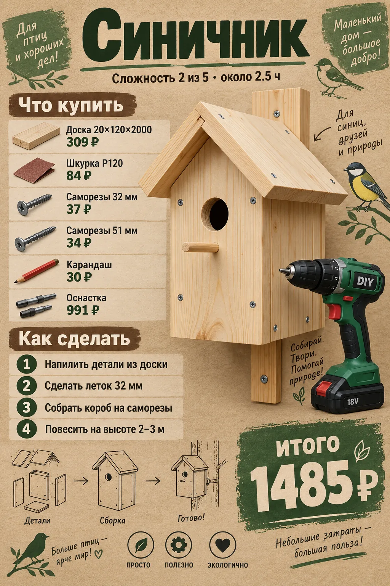
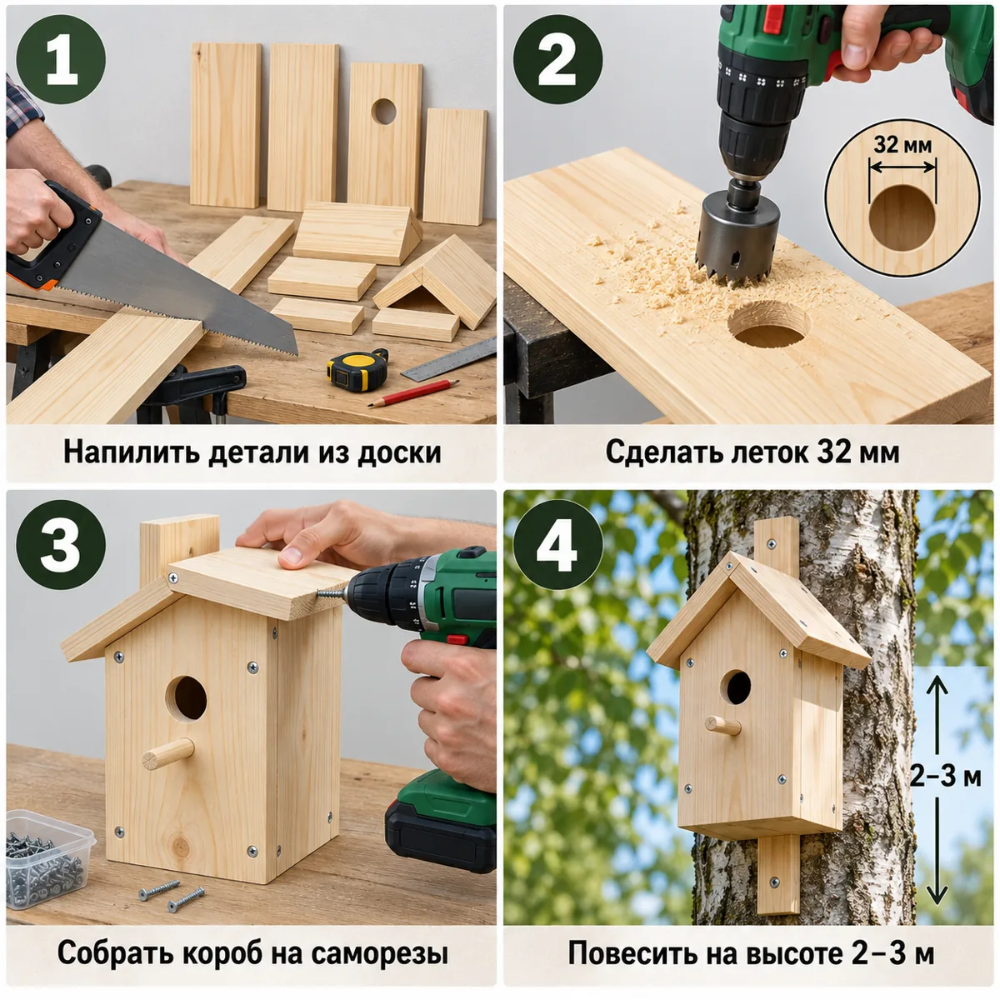

Домик для синиц: меньше скворечника, леток 32 мм. Хорошая первая работа с засверловкой и сборкой короба.


| Позиция | Зачем | Кол-во | Цена | Сумма |
|---|---|---|---|---|
| материал | ||||
| Доска 20×120×2000 Доска сухая строганая 20х120х2000 мм хвойные породы сорт АВ ФГИС ЛК · арт. 999584 |
доска 20×120×2000 | 1 шт | 309 ₽ | 309 ₽ |
| крепёж | ||||
| Саморезы 32 мм Саморезы ГД 32x3,5 мм (30 шт.) · арт. 125768 |
саморезы 32 мм | 1 упак | 37 ₽ | 37 ₽ |
| Саморезы 51 мм Саморезы ГД 51x3,5 мм (18 шт.) · арт. 125772 |
саморезы 51 мм для навески | 1 упак | 34 ₽ | 34 ₽ |
| расходник | ||||
| Карандаш Карандаш строительный малярный Hesler (2 шт.) · арт. 125418 |
карандаш | 1 упак | 30 ₽ | 30 ₽ |
| Шкурка P120 Наждачная бумага Flexione 230х280 мм Р120 влагостойкая · арт. 691898 |
шкурка P120 | 2 шт | 42 ₽ | 84 ₽ |
| оснастка | ||||
| Бита PH2 Бита Hesler PH2 магнитная 25 мм (882083) · арт. 882083 |
бита PH2 под саморезы | 1 шт | 33 ₽ | 33 ₽ |
| Сверло 3 мм Сверло по дереву спиральное КМ 3х60 мм (966064) · арт. 966064 |
сверло 3 мм: засверловка, чтобы доска не треснула | 1 шт | 42 ₽ | 42 ₽ |
| Ножовка по дереву Ножовка по дереву 400 мм 9 зуб/дюйм средний зуб · арт. 681543 |
ножовка по дереву | 1 шт | 226 ₽ | 226 ₽ |
| Стусло Стусло Сибртех пластиковое 300х65 мм (22571) · арт. 968520 |
стусло: ровный рез 90° и 45° | 1 шт | 143 ₽ | 143 ₽ |
| Рулетка Рулетка с фиксатором 3 м x 16 мм · арт. 159373 |
рулетка | 1 шт | 99 ₽ | 99 ₽ |
| Коронки по дереву 32–54 Набор коронок Практика (773-255) по дереву d32-54 мм с переходником (4 шт.) · арт. 132443 |
коронки: леток 32 мм | 1 шт | 448 ₽ | 448 ₽ |
| Итого, включая оснастку 991 ₽ | 1485 ₽ | |||
Источник идеи: https://www.ogorod.ru/ru/main/useful/14064/skvorechnik-svoimi-rukami-kak-pravilno-sdelat-i. Проект переработан под шуруповёрт 12 В и ручной инструмент.